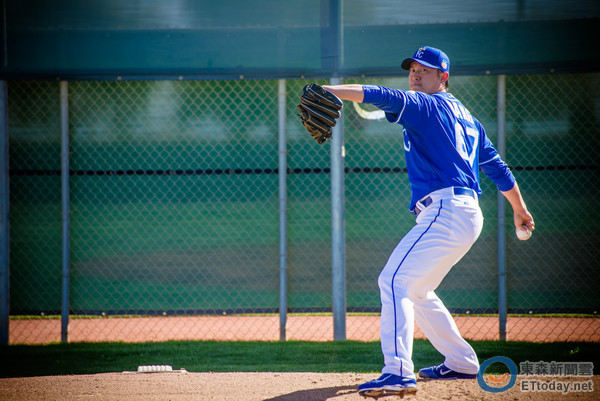

美國職棒大聯盟熱身賽，舊金山巨人以十比十六敗給堪薩斯皇家，王建民中繼一局用了14球，被打一支安打一次保送但也讓巨人揮出雙殺打沒有丟分，熱身賽防禦率降到1.93。
巨人跟皇家的先發投手都擋不住打者砲火，皇家范杜拉四局被打了11支安打包括三支全壘打丟了十分，巨人的布萊克本投不滿三局也丟了六分，接手的史拉尼亞再被莫斯塔卡敲三分全壘打，皇家從一比八落後三局猛攻八分超前，五局再得五分以15比10領先巨人。
打完五局以後皇家除了先發捕手裴瑞茲以外全部換下場，王建民則擔任第三任投手。左打的布蘭可揮出飛越二壘壘包的滾地安打上壘，但王建民馬上讓右打杜菲揮出游擊滾地球變成雙殺打，但又保送了左打潘尼克，王建民面對前三次打擊都敲出安打的阿若優還是送出伸卡球打出游擊滾地球三出局。
王建民一共用了14球好壞球各一半，幾乎只投伸卡球但最快球速147公里，並沒有拿出前幾場動輒超過150的球速，控球也不太理想，但他把熱身賽的滾地球跟飛球比率提升到四比一，防禦率降到1.93。皇家之後換上左投赫夫投完最後三局沒有失分，以六分差距打敗巨人。